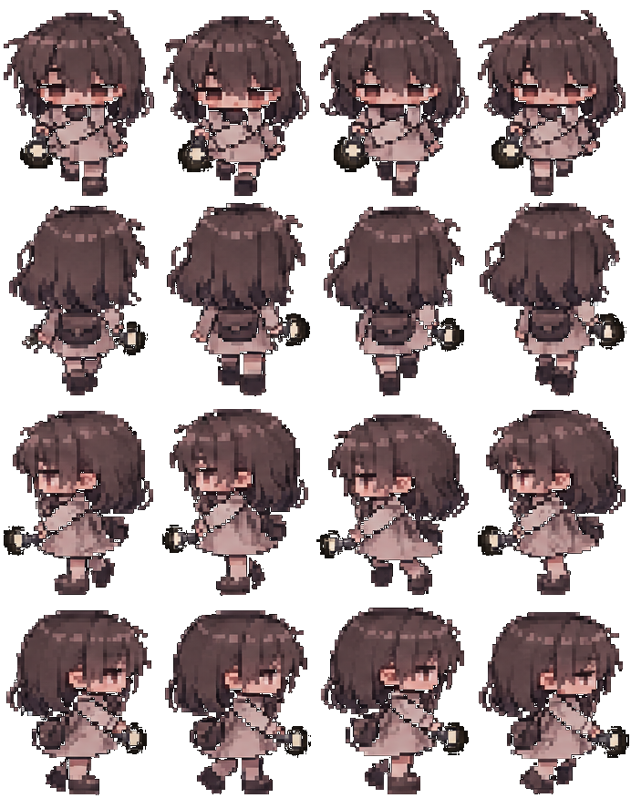

スプライトシート — 正確に切り出し（1536×1024 → 各フレームタイトにトリム）

元画像 1536×1024 を黒背景を透過化し、各フレームをピクセル検出でバウンディングボックス化（例: 下向き 173×212, 168×205 …）。原点は足元に統一、拡大時はニアレストネイバーでドットを保持。左のラベル領域は完全に除外。
方向: 下(↓) / 上(↑) / 左(←) / 右(→) ×各4コマ。ゲームはこの座標から drawImage(sx,sy,sw,sh) で直接再生。